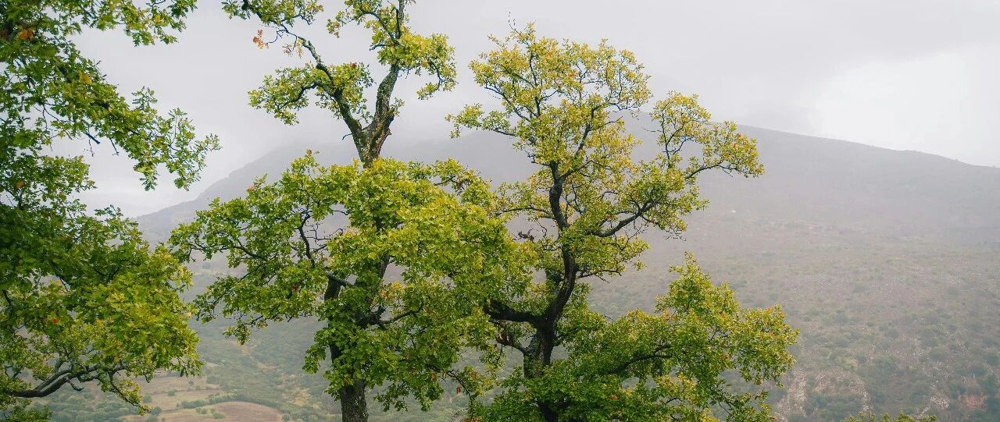

一个都不能少~
纳指涨1.64%，标普500涨1.05%，纳指再度创下历史新高。
七巨头的上涨修复+存储和光模块等AI基础设施企业集体爆发，是这轮上涨的核心推力。
这轮上涨比较有意思，指数比龙头股强。这个主要是因为指数编制的“新权重效应”，闪迪纳入纳指100等，影响都比较大。
这轮下跌中，我重点买的是纳指100和标普500ETF，以及微软、Meta、英伟达、伯克希尔等个股（具体买的个股，前段时间写过了），整体来说还行。
进取型账户中，苹果、微软、谷歌、亚马逊涨幅2-2.6%；Meta和特斯拉微涨；英伟达涨1.32%，台积电涨5.26%，博通涨5%，AMD涨6.67%，甲骨文涨约3.5%…
稳健型账户中，纳指100和标普500这两个宽基指数ETF带动了账户金额上涨，医药保健龙头股（礼来、强生、联合健康、诺和诺德）最近较震荡，消费板块龙头股（Costco、沃尔玛、麦当劳、宝洁）近期也小幅下跌。
礼来和麦当劳、宝洁这三个开始进入我的视线，还要再跌一跌，才会适当加仓，暂时不够便宜。
防守型账户中，美债相对稳定；伯克希尔近期下跌，希望能再下跌3%左右，进入我的另一个加仓节点；SCHD、强生、可口可乐、VISA等近期下跌。
伯克希尔主要是用于防守，市场出现机会时，由它来负责把握，毕竟它这个组合体很适合做防守：
保险+公用事业能源+铁路+制造/零售/服务+巨额投资组合+3700多亿美元的天量现金/类现金。
目前伯克希尔市值在1万亿美元左右，不贵也不便宜：
现金/类现金约3730亿美元+股票等投资约3180亿美元+铁路约850亿美元+能源约680亿美元+制造/零售/服务约1800亿美元+保险承保约950亿美元。
之前说谷歌像科技界的“伯克希尔”，主要是谷歌的投资组合等。大家要是对伯克希尔和谷歌都不太熟悉，可以看看腾讯，腾讯的投资组合就类似于国内科技界的“伯克希尔”。
当然，从企业文化来说，腾讯会相对差一些，还有不少路要走。
美股目前的变量，主要看月底和5月初巨头们的财报。在这之前，耐心享受市场的上涨和下跌。
资金、耐心和勇气，投资中很重要的三要素。
上一篇更新是写孩子的财商启蒙内容，其中有一句话可以多琢磨：
所谓财商，就是“能赚钱、会守钱、懂得看财富流向”，三位一体。
一个都不能少。
… …
最近一个多月在做市场调研，走到现在，有点不想走下去了。
走的大多数是规模企业和中型企业，涉及各行各业，亮点较小，困难挺多。具体的我没法写，有人提前打过招呼了，不能写。
有些城市之前实业发达，结果近十年内被房地产一波流掏空了身子（跑去炒房被套了或亏损），叠加外部环境的变化，现在实业肉眼可见地萧条和困难，非常可惜。
这轮调研的亮点，主要在新兴科技产业和依赖外部市场需求量变大的产业，前者目前主要靠补贴等驱动，后者存在汇率变动吞噬利润等变数。
做跨境的一些企业，近期主要困扰项还有VPN的大规模阵亡，一定程度上也有些影响。这个就不多展开说了，希望企业能安稳经营，这年头做企业很不容易。
下周开始进入广东走走，希望听到的会更好，要不然基调挺沉闷的。
… …
两小娃现在三个多月了，时间真快。
中午一般母乳喂养后不到一小时，老二和老三放学到家，姐弟俩开始和妈妈一起，带娃做大运动训练、精细动作训练、语言社交互动、感官刺激等。
大运动训练主要是俯卧仰头、翻身准备、拉坐训练。
俯卧仰头每天做2-3次，每次2分钟左右。老二老三各拿一个彩色玩具逗弟弟妹妹，引导他们抬头和转头寻找，我媳妇负责用手护住小娃的颈部。
翻身准备训练，要穿平整轻薄的衣服，主要是用玩具逗小娃，引导他们从仰卧转向侧卧，左右交替侧卧，让小娃感受体位变化。
拉坐训练每天都会做，这个主要是增强小娃的颈部和核心肌肉群体的力量，为后续坐/爬等做准备。
精细动作训练，主要做抓握练习和触觉刺激。
抓握练习用直径约2cm的摇铃，我家俩小娃比较喜欢这个，有声响有色彩，一般会让他们自己抓握3-5秒；还有就是放一些小玩具让他们自由抓握，锻炼他们的手眼协调能力。
触觉刺激，主要用不同材质的布，绸布、棉布等。这个主要是促进娃的触觉神经发育，每次锻炼5分钟左右。
语言社交互动，老三很喜欢模仿弟弟妹妹的声音去对话，用元音回应他们的咿咿呀呀。我媳妇说老三唯一做得不够好的，就是语速不够缓慢，但夸张的表情做得很到位。
老三说，每次逗弟弟妹妹，感觉他们随着时间开始不断长肉肉，像蚕宝宝一样，从一开始的丑丑没肉，再到后来一点点开始长肉肉，变得白白嫩嫩。
这是啥比喻…天马行空的，想象力很丰富。
阅读互动，拿一些黑色和彩色卡片，和小娃的眼睛保持30㎝左右的距离，给他们描述图案。这个老二做得很好，女孩子貌似这方面会比男生强不少？
感官刺激，一个是视觉追踪，另一个是听觉发育。
听觉发育比较简单，在小娃左右两侧轻声说话，或播放一些轻柔音乐，让小娃寻找声源，这样能训练听觉定位能力。
视觉追踪，一般用红色球体或黑白卡片，在小娃眼前约25-30cm缓慢移动，但这个角度不要超过90度。另外一个主要注意的是，悬挂床铃要每周更换位置，这样能防止斜视，距离眼睛45cm以上。
抚触和袋鼠式拥抱，是老二和老三最喜欢做的，也很喜欢逗弟弟妹妹笑。
我说，让他们俩学好技能，以后找对象了可以说自己从小照顾弟弟妹妹，带娃经验丰富。无论找工作还是找对象，都有很大优势[旺柴]
媳妇问我，明年要不要再做2个娃？我觉得还是算了，现在这么多我已经很知足了。
可别给我再整了，不要搞得我65岁了娃才刚上大学…
就这样吧。
免责声明：本人提供的信息仅供参考，不构成投资建议。本人的交易不代表任何立场；投资者应根据自身财务状况、投资目标等情况自主做出投资决策并承担投资风险。投资有风险，入市需谨慎。